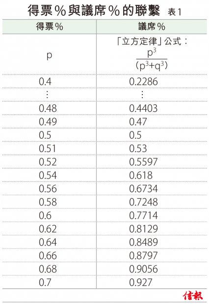
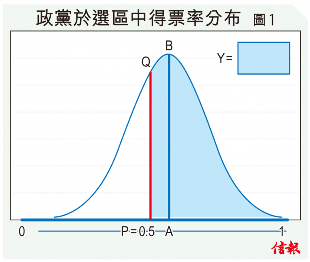
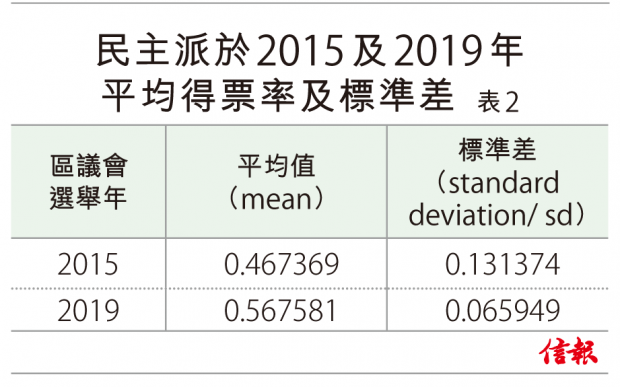

本欄上期（註1）介紹了在兩黨制和單議席單票制的選舉局面中，兩黨所得席數的比例與兩黨所得票數的比例，很多時候都會服從一個「立方定律」（Cubic Law）。這定律是一條數學公式，它指出在兩黨制的選舉局面下，假設p是甲政黨的全國得票率，而q是另一政黨（乙政黨）的全國得票率，在兩黨制的假設底下，p+q=1。利用「立方定律」 的公式，甲政黨所獲的議席比例=p3/（p3+q3）。對應於不同p值的議席比例見【表1】。
以本港2015年區議會選舉的結果為例，當年民主派得票率為40%，用「立方定律」計算出來的議席比率是22.9%。事實上，當年民主派獲得的議席比率是28%，與「立方定律」的預測相當接近。
2015年區選議席比率與定律接近
早於1909年，Smith在英國皇家選舉制度委員會的聽證會中，首次提及「立方定律」，他指出曾請教數學家朋友Major MacMahon，所得的答案是︰議席比例應大於或等於（>=）p3/（p3+q3）！
MacMahon是一位相當有權威的數學家，但有趣的是，後來學者翻查他的著作，卻從未發現任何有關選舉結果的「立方定律」的文獻。好像一切都是基於Smith的一面之詞。究竟MacMahon對「立方定律」應用在選舉分析中有幾認真？並且，他認為這概念在統計學的顯著性（significance）有幾強？這些問題的答案無從稽考。但後期的發展，「立方定律」由MacMahon提出的 >= p3/（p3+q3），褪變為= p3/（p3+q3），又是怎麼一回事呢？
MacMahon是一位相當有權威的數學家，但有趣的是，後來學者翻查他的著作，卻從未發現任何有關選舉結果的「立方定律」的文獻。好像一切都是基於Smith的一面之詞。究竟MacMahon對「立方定律」應用在選舉分析中有幾認真？並且，他認為這概念在統計學的顯著性（significance）有幾強？這些問題的答案無從稽考。但後期的發展，「立方定律」由MacMahon提出的 >= p3/（p3+q3），褪變為= p3/（p3+q3），又是怎麼一回事呢？
首次對「立方定律」的深入及嚴謹的研究可追溯至M.G. Kendall和A. Stuart於1950年於The British Journal of Sociology發表的一篇論文（註2）。Kendall和Stuart這兩位英國統計學家的來頭不小，他們在統計學領域非常多才多藝和具影響力。他們合寫的The Advanced theories of Statistics，更是唸統計學的研究生必讀的教科書。
Kendall和Stuart認為，雖然某政黨在全國範圍內的得票率為p，但並不等於該黨在每一個選區的得票率都等於p。他們指出，選民不能被視為隨機（at random）地分散在各個選區，選區之間p的變化是由於有共同政治觀點的選民往往以群體形式出現。跟據Edgeworth（1898）（註3）的研究，某政黨在全國不同選區中的得票率很多時都服從一個正態分布（ normal distribution），見【圖1】。這個正態分布的平均值當然是該政黨在全國的得票率，即圖1中的A點。假設該政黨獲票多於50%，A點就處於P=0.5的右方，而該政黨獲勝的選區，就由圖1中PQ右側的面積（= y）代表，而該政黨落敗的選區，就由【圖1】中PQ左側的面積（1= y）代表，於是所得席位的比率是 y/（1-y）。
 明顯地，y值的大小，與該正態分布的標準差有關︰如果標準差變小，則位於PQ右側的曲線下的面積（贏得的席位比例）將更大。但該標準差究竟有多大呢？Kendall & Stuart指出，英國在1935年、1945年、1950年的3次選舉中，正態分布的標準差有相當穩定的數值分別為0.133、0.135及0.138。在正態分布成立及正態分布的標準差等於0.136788 的前提底下，他們證明了政黨所得的議席比例會非常接近「立方定律」公式所算出的比率。但是，假若正態分布的標準差低過0.136788，獲勝政黨的議席率會高於用「立方定律」公式計算數出來的數字。
根據以上的文獻考據，其實重要的不是MacMahon說的比例大於或等於 p3/（p3+q3），還是Kendall and Stuart說的近似地等於 p3/（p3+q3），而應該把注意力集中於研究每個選區得票率p的分布。由於全港共有452個選區，我們應找出每個選區的得票比率（註4），然後利用這四百多個數據，算出它們的平均值及標準差。
我們不單研究2019年的數據，同時也就2015年的選舉數據作出類似計算以作比較。選區得票率在兩個選舉年度的平均值及標準差見【表2】。此外，選區得票率在兩個選舉年度的直方圖（histogram）見【圖2】及【圖3】。
根據以上Kendall和Stuart的說法，「立方定律」 如果正態分布中的標準差是0.136788，而獲勝政黨得票率分布的標準差若接近0.136788，「立方定律」 便能準確計算其議席率的關聯。從【圖2】可見，因為在2015年區議會選舉中，民主派的得票率分布的標準差是0.131374≈0.136788，所以民主派在2015區議會選舉中的0.28實際議席率，與「立方定律」計算的0.23議席率相近。
可是，到了2019年區議會選舉，因為民主派的得票率分布的標準差是0.065949< 0.136788，所以民主派的0.87實際議席率，高超於用「立方定律」計算的0.72議席率。
標準差的大小影響結果
跟據【表2】的計算，該年度選區得票率的標準差為0.131，與Kendall and Stuart 所設定的0.136788 相當接近，所以在該年度，議席比例 很接近立方定律。但最近這次選舉，標準差大幅度地縮窄至0.0659，由於這數值遠低於Kendall and Stuart所提出的0.136788，所以議席的比例，比立方定律所預測的還要極端，民主派以60︰40的得票率卻能贏取八成七的議席，與這個細小的標準差有莫大的關係。
註1︰見2019午11月29日信報本攔
註2︰Kendall, M. G., & Stuart, A.（1950）.The Law of the Cubic Proportion in Election Results.The British Journal of Sociology,1（3）,183. doi︰10.2307/588113
註3︰Edgeworth, F.Y.（1898）“Applications of the Theory of Probability”,J.R.Statist.Soc.51,p.534.
註4︰先去除由不明確派系候選人當選的選區，在餘下選區中，先去除由不明確派系的候選人所得選票後，再計算民主派及建制派的得票率
陸俊杰為金融交易員
鄒小敏為理工大學專業進修學院客席講師
林建教授為香港浸會大學榮休教授兼香港大學統計精算學系榮譽教授
Article from HKEJ Source